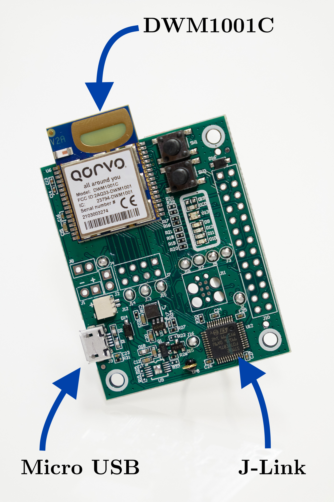

5 UAV implementation
The proposed measurement system is designed to work with the existing MRS UAV System that has been developed by the MRS group at CTU. The MRS system relies on the use of the Robot Operating System (ROS) in version ROS Noetic released in 20201.
ROS is a robust framework that is used to develop and control robots. It provides a variety of tools and libraries that make the development of robot software easier. ROS uses a distributed system, allowing different parts of a robot to communicate with each other using a messaging model. It supports multiple programming languages, making it accessible to developers. ROS has a large community and a wide range of preexisting packages, making it a popular choice for research and industrial applications.

An overview of the proposed system is shown in figure 5.1. This thesis implements the blue-colored blocks, and these blocks will be explained in more detail in this chapter.
5.1 Qorvo DW1000 UWB PHY radio
Qorvo DW1000 is a UWB PHY radio developed and manufactured by Qorvo2. The proposed solution utilizes a Qorvo DWM1001-DEV development board which consists of a DWM1001C transceiver module and a J-Link debug probe. Figure 5.2 showcases the printed circuit board (PCB) of the Qorvo DWM1001-DEV. The DWM1001C houses the DW1000 radio chip, nRF52832 microcontroller, 3.0 V, and 1.8 V power supplies. The DW1000 is connected to the nRF52832 via the SPI bus. The module also includes Bluetooth connectivity and an accelerometer, but it remained unutilized.

The nRF52832 is the microcontroller that gets programmed. The programming language of choice is C++ with combination of Zephyr RTOS3 which enables use of multitasking and concurrency. Zephyr RTOS also contains a rich selection of peripheral drivers for faster development and higher abstraction.
A ranging technique of choice is double-sided two-way ranging. It fulfills all the needs, as it compensates for clock drift and does not require any infrastructure. Each of the two devices in the ranging instance fills out fields in the ranging message 5.3. The values in the ranging message are referenced to DW1000 clock frequency. Therefore, in order to get an actual time, the values need to be multiplied by \(15.65 \textrm{ ps}\). The solution has the ability to measure in many-to-many forming a complete graph.

Data from UWB are sent to ROS via UART connection at baud rate 115200. As a communication protocol, the Baca Protocol is used as recommended by the MRS group4.
UWB ranging on the ROS side handles uwb_range_node. The node decodes the messages and republishes them as ROS topics. Every N seconds, the node sends a beacon message through the UWB. This message is then received and processed by other UAVs. An essential function of the beacon message is to synchronize the UWB measurements with UVDAR measurements, enabling the fusion of the measurements based on IDs. This is done via the UAV identificator that is embedded in the beacon message. The retrieved ID fromthe beacon message is assigned to the MAC addresses in the address resolution table.
5.2 Object tracker
An object tracker is an ROS node where the measurements are fused. Both linear and unscented Kalman filters are utilized in this node, as can be seen in figure 5.4. The fuse proceeds in the world frame to negate the effects of ego-motion.
For the predict step, an implementation from LKF is used with the state vector and transition matrix described by equations 5.1. \[ \begin{aligned} \mathbf{x} &= \begin{bmatrix} x & y & z & roll & pitch & yaw \end{bmatrix}^{T} \\ \\ \mathbf{F} &= \begin{bmatrix} 1 & 0 & 0 & 0 & 0 & 0 \\ 0 & 1 & 0 & 0 & 0 & 0 \\ 0 & 0 & 1 & 0 & 0 & 0 \\ 0 & 0 & 0 & 1 & 0 & 0 \\ 0 & 0 & 0 & 0 & 1 & 0 \\ 0 & 0 & 0 & 0 & 0 & 1 \\ \end{bmatrix} \end{aligned} \tag{5.1}\] Figure 5.5 depicts the challenge of integrating UWB and UVDAR.

The UVDAR measurement consists of a position described by Cartesian coordinates and orientation described by a quaternion as shown in 5.2 with a corresponding covariance matrix. The measurement is in the frame of the camera, but with help of mrs_transformer the coordinates are transformed to the world coordinates. \[
\begin{aligned}
\mathrm{position} = \begin{bmatrix} x & y & z \end{bmatrix}^T \qquad \mathrm{orientation} = \begin{bmatrix} x & y & z & w \end{bmatrix}^T
\end{aligned}
\tag{5.2}\] For this kind of measurement, the linear Kalman filter is the best choice, because there are no nonlinearity functions and the computation cost is low. The rotation from UVDAR is transformed from quaternion to Euler angles. A measurement matrix \(\mathbf{H}\) is a simple identity matrix of dimension six.
The UWB measurement acquires the distance from UAV \(\mathbf{x_1}\) to UAV \(\mathbf{x_2}\) as noted in equation 5.3. \[ \begin{aligned} UWB_{distance} &= \sqrt{(\mathbf{x_2 - x_1})^T (\mathbf{x_2 - x_1})} \end{aligned} \tag{5.3}\] The problem is non-linear and requires a more complex approach. For this reason, the unscented Kalman filter is employed for fusing distance. The previous state needs to be transformed from world frame to UAV frame. The result needs to be transformed back to world frame back to world. The measurement function is described as a C++ function 5.6.
kalman::range_ukf_t::z_t observe_ukf(
const kalman::range_ukf_t::x_t &x)
{
Eigen::VectorXd pose(3);
pose << x[(int)STATE::X],
x[(int)STATE::Y],
x[(int)STATE::Z];
kalman::range_ukf_t::z_t z;
z << pose.norm();
return z;
}ROS Noetic release info http://wiki.ros.org/noetic↩︎
Qorvo DW1000 https://www.qorvo.com/products/p/DW1000↩︎
Zephyr RTOS https://zephyrproject.org/↩︎
Baca protocol https://github.com/ctu-mrs/mrs_serial↩︎